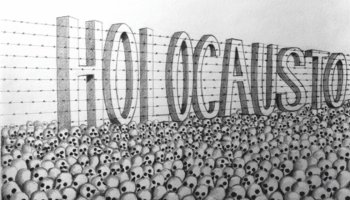
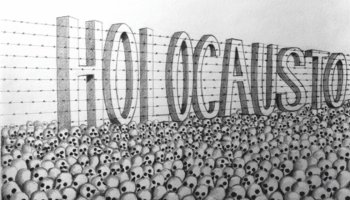

| INICIO | INTOLERANCIA RELIGIOSA | CONCLUSAO |
|---|
HOLOCAUSTO

Nossa relação com o passado se dá de diferentes formas e a partir da interpretação das experiências vividas, o homem passa a ditar determinadas ações de sua vida cotidiana. Geralmente, as experiências ruins são respondidas com ações e ideias que evitam a repetição de um mesmo infortúnio. Um claro caso desse tipo de relação do passado pode ser notado quando fazemos menção ao Holocausto.
O Holocausto foi uma prática de perseguição política, étnica, religiosa e sexual estabelecida durante os anos de governo nazista de Adolf Hitler. Segundo a ideologia nazista, a Alemanha deveria superar todos os entraves que impediam a formação de uma nação composta por seres superiores. Segundo essa mesma idéia, o povo legitimamente alemão era descendente dos arianos, um antigo povo que – segundo os etnólogos europeus do século XIX – tinham pele branca e deram origem à civilização européia.
Dessa forma, para que a supremacia racial ariana fosse conquistada pelo povo alemão, o governo de Hitler passou a pregar o ódio contra aqueles que impediam a pureza racial dentro do território alemão. Segundo o discurso nazista, os maiores culpados por impedirem esse processo de eugenia étnica eram os ciganos e – principalmente – os judeus. Com isso, Hitler passou a perseguir e forçar o isolamento em guetos do povo judeu da Alemanha.
HOLOCAUSTO

Nossa relação com o passado se dá de diferentes formas e a partir da interpretação das experiências vividas, o homem passa a ditar determinadas ações de sua vida cotidiana. Geralmente, as experiências ruins são respondidas com ações e ideias que evitam a repetição de um mesmo infortúnio. Um claro caso desse tipo de relação do passado pode ser notado quando fazemos menção ao Holocausto.
O Holocausto foi uma prática de perseguição política, étnica, religiosa e sexual estabelecida durante os anos de governo nazista de Adolf Hitler. Segundo a ideologia nazista, a Alemanha deveria superar todos os entraves que impediam a formação de uma nação composta por seres superiores. Segundo essa mesma idéia, o povo legitimamente alemão era descendente dos arianos, um antigo povo que – segundo os etnólogos europeus do século XIX – tinham pele branca e deram origem à civilização européia.
Dessa forma, para que a supremacia racial ariana fosse conquistada pelo povo alemão, o governo de Hitler passou a pregar o ódio contra aqueles que impediam a pureza racial dentro do território alemão. Segundo o discurso nazista, os maiores culpados por impedirem esse processo de eugenia étnica eram os ciganos e – principalmente – os judeus. Com isso, Hitler passou a perseguir e forçar o isolamento em guetos do povo judeu da Alemanha.
Projeto Interdisciplinar 1º Periodo Analise Desen. Sistemas
Última atualização 26/10/2017
Todos Direitos Reservados #TOPCODERS
adsistemas.unipac@gmail.com